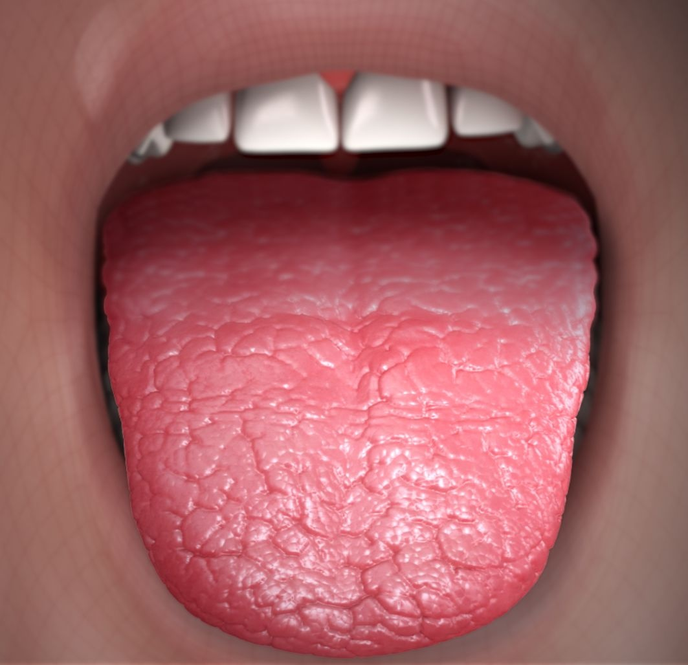

Dry mouth

CAUSES:
- stress
anxiety
-
smoking tobacco
-
using marijuana
-
taking tranquilizers
-
breathing through your mouth
-
taking certain medications, including some
- antihistamines, antidepressants, and appetite suppressants
undergoing radiation therapy on your head or neck
-
some autoimmune disorders, such as Sjögren’s syndrome
-
botulism poisoning
-
aging
HOME REMEDIES
- sipping water often
-
sucking on ice cubes
-
avoiding alcohol, caffeine, and tobacco
-
limiting your salt and sugar intake
-
using a humidifier in your bedroom when you sleep
-
taking over-the-counter saliva substitutes
-
chewing sugarless gum or sucking on sugarless hard candy
-
using over-the-counter toothpastes, rinses, and mints
-
TREATMENT
- Your doctor will likely review any medications you’re taking to see if any may be causing your dry mouth. They may give you a different amount to take or change your medication to relieve symptoms.
-
Your doctor may also prescribe artificial saliva or medications to increase saliva production in your mouth.